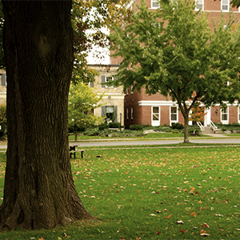

Picture
What does Nature give us ?
By Ashwin Nandakumar
There is no question that Earth has been a giving planet. Everything humans have needed to survive, and thrive, was provided by the natural world around us: food, water, medicine, materials for shelter, and even natural cycles such as climate and nutrients. Scientists have come to term such gifts ‘ecosystem services’, however the recognition of such services goes back thousands of years, and perhaps even farther if one accepts the caves paintings at Lascaux as evidence. Yet we have so disconnected ourselves from the natural world that it is easy—and often convenient—to forget that nature remains as giving as ever, even as it vanishes bit-by-bit. The rise of technology and industry may have distanced us superficially from nature, but it has not changed our reliance on the natural world: most of what we use and consume on a daily basis remains the product of multitudes of interactions within nature, and many of those interactions are imperiled. Beyond such physical goods, the natural world provides less tangible, but just as important, gifts in terms of beauty, art, and spirituality.
Earth Day seems as good a day as any to remind ourselves what nature gives us free-of-charge. Here then is a selective sampling of nature’s importance to our lives:
contentPosition
Image1
Content
Fresh water: There is no physical substance humans require more than freshwater: without water we can only survive a few hellish days. While pollution and overuse has threatened many of the world’s drinking water sources, nature has an old-fashioned solution, at least, to pollution. Healthy freshwater ecosystems—watersheds, wetlands, and forests—naturally clean pollution and toxins from water. Soils, microorganisms, and plant roots all play a role in filtering and recycling out pollutants with a price far cheaper than building a water filtration plant. According to research, the more biodiverse the ecosystem, the faster and more efficiently water is purified.
Pollination: Imagine trying to pollinate every apple blossom in an orchard: this is what nature does for us. Insects, birds, and even some mammals, pollinate the world’s plants, including much of human agriculture. Around 80% of the world’s plants require a different species to act as pollinator.
In agriculture, pollinators are required for everything from tomatoes to cocoa, and almonds to buckwheat, among hundreds of other crops. Globally, agricultural pollination has been estimated to be worth around $216 billion a year. However large such monetary estimates don’t include pollination for crops consumed by livestock, biofuels, ornamental flowers, or the massive importance of wild plant pollination.
Seed dispersal: Much like pollination, many of the world’s plants require other species to move their seeds from the parent plant to new sprouting ground. Seeds are dispersed by an incredibly wide-variety of players: birds, bats, rodents, megafauna like elephants and tapir, and even, researchers have recently discovered, fish. Seed dispersal is especially important for tropical forests where a majority of plants depend on animals to move.
Pest control: A recent study found that bats save US agriculture billions of dollars a year simply by doing what they do naturally: eating insects, many of which are potentially harmful to US crops.
Almost all agricultural pests have natural enemies, along with bats, these include birds, spiders, parasitic wasps and flies, fungi, and viral diseases. The loss, or even decline, of such pest-eating predators can have massive impacts on agriculture and ecosystems.